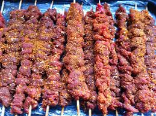

Suya

Description:
Suya is traditional smoked spiced meat skewer which originates from Nigeria, and is a popular food item across West Africa. Suya is a large part of Hausa culture and food and is traditionally prepared and made by Hausa men, thus called 'Mai nama'. Suya is generally made with skewered beef, ram, or chicken.
Ingredients:
- 1/4 cup creamy natural peanut butter
- 1/2 small yellow onion, grated
- 2 tablespoons tomato paste
- 1 tablespoon olive oil
- 1 tablespoon kosher salt (or 1 1/2 teaspoons fine table salt)
- 2 teaspoons smoked paprika
- 1 teaspoon allspice
- 3/4 teaspoon garlic powder
- 1/2 teaspoon cayenne pepper
- 1/2 teaspoon freshly ground black pepper
- 1/4 teaspoon powdered ginger
- 2 pounds top sirloin steak cut into 1.5-inch cubes
Steps
- Combine peanut butter, grated onion, tomato paste, olive oil, salt, paprika, allspice, garlic powder, cayenne, black pepper, and powdered ginger in a mixing bowl. Stir until well combined.
- Add steak pieces to the marinade bowl and toss to coat thoroughly. Cover and allow to marinate in the refrigerator for about 2 hours.
- Preheat an outdoor grill with coal for high heat and lightly oil the grate.
- Thread marinated steak pieces onto large metal skewers.
- Grill over the hot white coals until desired doneness, 5 to 6 minutes per side.